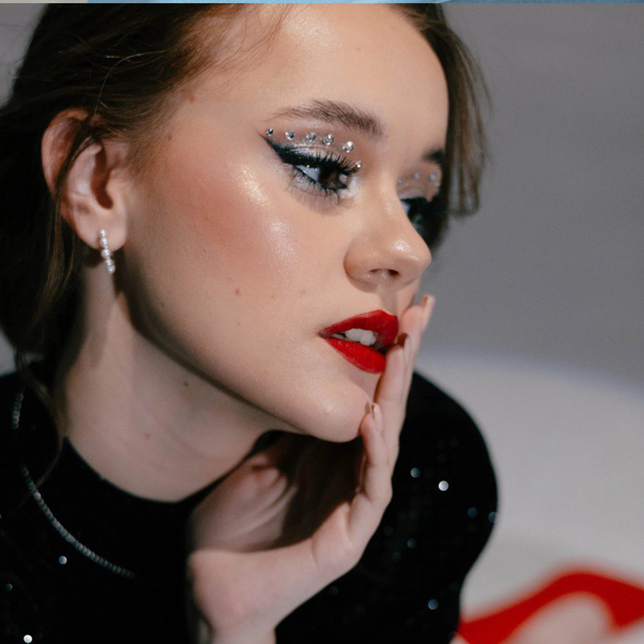
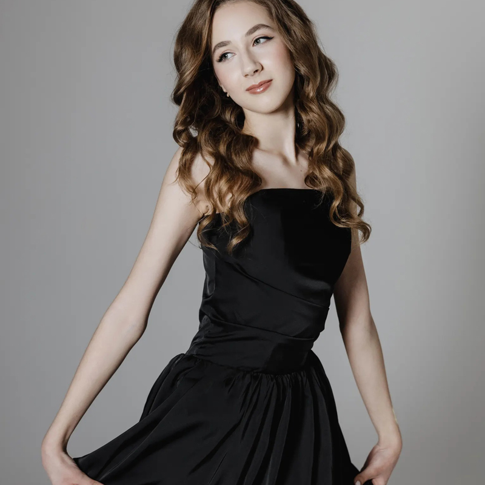
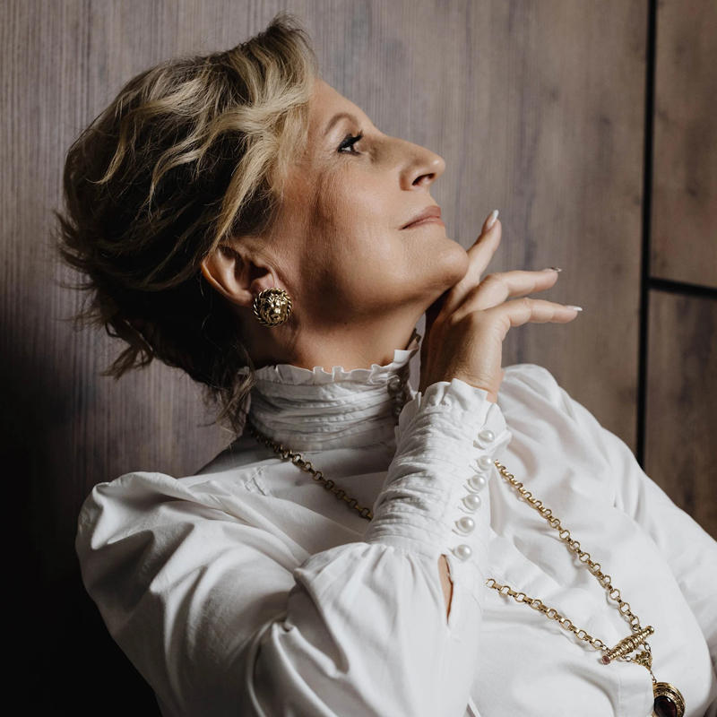
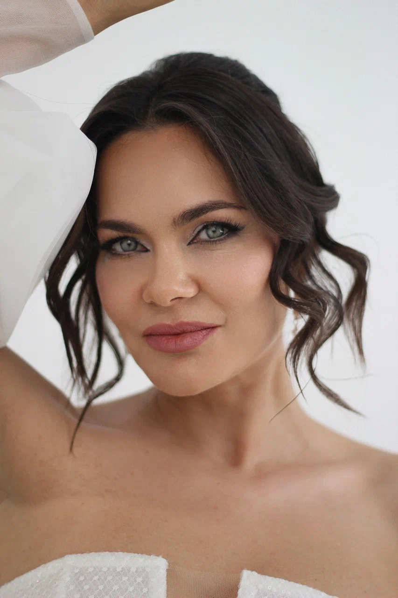
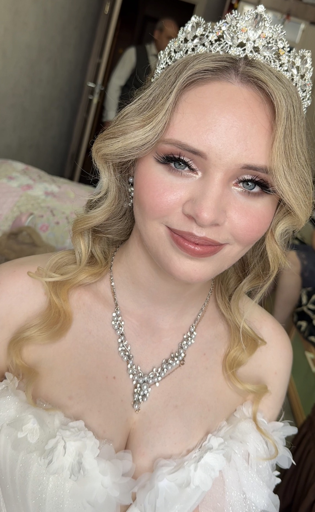
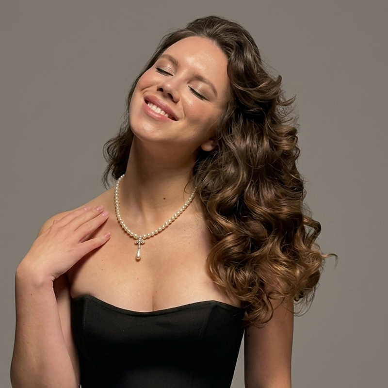
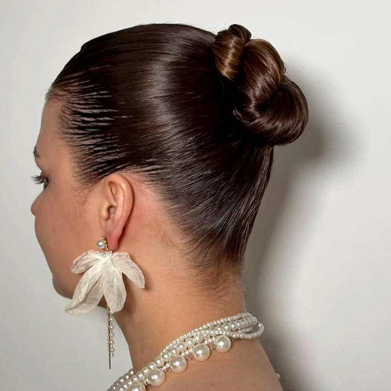

МАКИЯЖ

Вечерний
Сияйте ярко на любом событии!
Готовитесь к особому торжеству, свиданию, вечеринке или фотосессии? Я создам для вас эффектный и выразительный образ, который идеально дополнит ваш наряд и сделает вас центром внимания.

Дневной
Ваша естественная красота в лучшем свете!
Хотите выглядеть свежо, отдохнувшей и ухоженной каждый день, но без ощущения "маски" на лице? Я создаю невесомый дневной макияж, который подчеркивает вашу природную красоту.

Возрастной
Подчеркните свою мудрость и верните свежесть!
С возрастом кожа меняется, и макияж должен это учитывать. Моя задача — не "спрятать" возраст, а деликатно скорректировать и освежить образ.


СВАДЕБНЫЙ МАКИЯЖ
Идеальный образ для самого важного дня
Ваша свадьба — это история любви, и каждая невеста заслуживает быть самой прекрасной героиней этой истории. Я понимаю, как важно, чтобы в этот день все было идеально, особенно ваш образ. Моя цель как визажиста — не просто нанести макияж, а создать гармоничный образ. Я работаю с учетом:
• Цветотипа и особенностей вашей кожи.
• Стиля вашего платья и прически.
• Ваших личных пожеланий и видения.
ПРИЧЕСКА

ЛОКОНЫ
Превращаю прямые волосы в произведение искусства!
Если вы устали от обыденных укладок и хотите добавить в свой образ изюминку, я к вашим услугам!
Специализируюсь на создании разнообразных локонов:
- Классические упругие кудри
- Легкие пляжные волны
- Элегантная голливудская волна
- Объемные локоны
Использую только профессиональные стайлинги и инструменты, чтобы ваша прическа держалась долго и выглядела безупречно.

ПУЧОК
Создаю идеальные пучки и элегантные собранные прически для любого события!
Нужна прическа, которая подчеркнет вашу красоту и продержится весь день? Я предлагаю широкий спектр собранных укладок:
- Высокий, объемный пучок и хвост для торжества
- Низкий, классический пучок для утонченного образа
- Романтичный пучок с выпущенными прядями
- Изящная ракушка
- Современные текстурные собранные прически